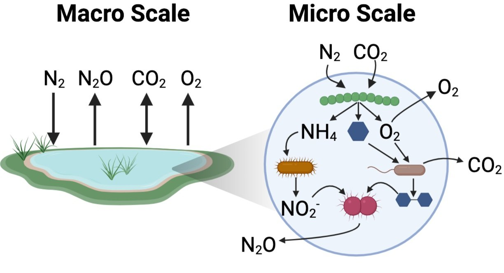

Our Mission
Microbial communities in, on, and around us are required for the survival of all organisms on our planet and perform essential ecosystem services that maintain nutrient balances across the globe. The activities of microbes (bacteria, archaea, and fungi) within microbial communities exert critical controls on human, animal, and plant health, greenhouse gas flux, and have incredible potential for biotechnological applications. Importantly, no individual microorganism acts in isolation to perform these tasks. Instead, it is interaction networks between microbes within microbial communities that drive their real world impact through collective behavior.
The Diamond lab endeavors to understand how the features (organism interactions, composition, activity, metabolic pathways, genes, and mobile genetic elements) that make up microbial communities each individually contribute to their quantifiable collective behavior (i.e. community greenhouse gas production rate). To do so we rely heavily on the development and cultivation of model in vitro microbial communities that recapitulate the phenotypes observed in the natural systems they are derived from. Techniques then used by the Diamond lab to interogate in vitro community phenotypes include genome-resolved metagenomics, other high-throughput O’mics techniques, multivariate statical analysis, machine learning, and targeted genetic editing within microbial communities.
As a member of the Innovative Genomics Institute BiomeForge initiative our ultimate goal is to understand the quantitative importance of microbial community features both to further understand microbial community biology as well as to enable the effective engineering of microbial communities in ways that will benifit human health, the environment, and society
